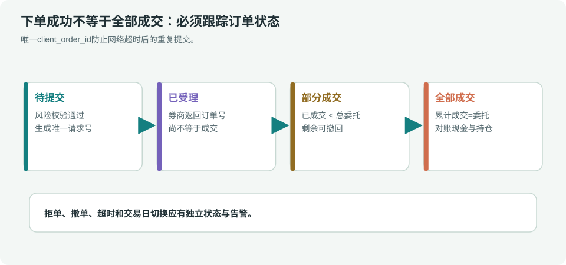
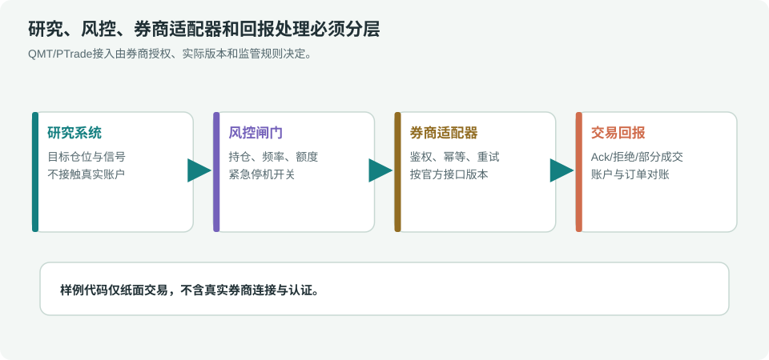
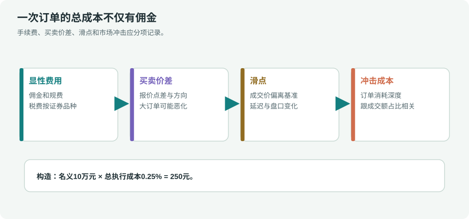

CHAPTER 25 · TRADING SYSTEMS
实盘交易系统：订单状态、风控与合规边界
可重复的交易系统必须能区分订单提交与实际成交，能处理中断与部分成交，也必须遵守市场和券商权限。
订单API返回成功，为什么账户可能一股都没有买到？
实盘交易系统里，“发送请求”“券商收到订单”“交易所受理”“部分成交”“全部成交”是不同事件。网络请求返回成功只能说明某个链路阶段完成，不意味着证券已经成交。交易过程中可能出现拒单、排队、部分成交、撤单失败、网络重试和回报延迟。
因此实盘系统的最小可信结构不是一个直接调用下单函数的策略脚本，而是独立的信号层、风险闸门、授权适配器、订单状态机和对账系统。每一层都需要错误处理、限额和日志，且任何未确认的订单都不应被盲目重复提交。

完整交易架构：把研究策略与真实账户隔离
研究引擎计算目标组合或交易意图，不应该直接持有券商生产账号的密钥。风险模块对证券资格、账户买入能力、交易额度、持仓上限、最大撤单率、交易时段和重复订单进行检查。通过审查后，适配层才将命令转换为券商支持的下单请求。

回报处理必须依据可靠的订单号关联下单、撤单与成交回报，并持续核对账户现金、成交数量、未完成订单和最终持仓。对关键异常要有暂停新单、撤销可撤订单、人工介入和事后审计机制。风险闸门不等于保证不存在损失，但可以避免某些技术失控被放大。
QMT、miniQMT与PTrade：接口权限和版本不能凭网文推定
券商提供的QMT或PTrade体系可以具备策略开发、仿真和实盘交易能力，但实际支持的Python接口、账户类型、市场权限、限速、数据级别、网关版本和申请条件都依赖券商的正式授权与当前部署。对接前应向实际券商取得官方接口文档、模拟账户、交易时段和支持的证券范围。
本仓库不提供真实券商登录、API Token、实盘认证、交易服务器地址或可直接下单的代码。这些属于有权限边界和账户资金风险的生产环境工作。教学示例使用纯内存PaperBroker，只用于确认状态转移、重试幂等与部分成交算法，不能冒充QMT/PTrade生产接口。
中国证券程序化交易规则：适用日期与报告义务要准确
中国证监会发布的《证券市场程序化交易管理规定（试行）》自2024年10月8日施行，明确了程序化交易报告、交易监控、风险防控、系统安全等框架性要求。上交所与深交所的程序化交易实施细则自2025年7月7日起施行，细化了信息报告、交易行为和技术系统等要求。
实盘前需要核验策略是否构成监管意义上的程序化交易、实际参与市场的适用规则、应报告的信息及其变更、券商系统接入与监控要求、异常交易行为限制、交易所最新公告，以及高频交易和跨境通道可能适用的额外措施。不能因为某个平台能发送订单就认为已完成合规义务。具体判断应以当前规则、交易所及券商实际要求为准。
订单状态机：请求超时不等于请求失败
假设客户端发送订单ID=ABC、委托100股，随后网络超时。此时有两种可能：券商未收到请求，或者已经受理但客户端没有收到确认。若系统简单再发一笔新ID订单，可能意外买入200股。因此每笔意图应有唯一的client_order_id；重试时先查询同一ID状态，并根据券商支持的幂等协议或对账结果决定下一步。
部分成交也需要正确处理。例如100股委托已经成交40股，剩余60股仍可能继续成交或被撤销。累计成交不得超过委托量，取消状态不能被后续模拟成交随意覆盖。对账户现金和持仓必须按成交回报更新，而不是按提交数量提前记账。
from quant_lab import PaperBroker
paper = PaperBroker()
order = paper.submit("PAPER-001", 100, risk_approved=True)
assert paper.submit("PAPER-001",100,risk_approved=True) is order
paper.fill("PAPER-001",40)
assert (order.state,order.leaves)==("PARTIAL",60)
paper.fill("PAPER-001",60)
assert order.state == "FILLED"在仓库根目录运行：python3 examples/quant_lab.py，或运行单元测试：python3 -m unittest discover -s examples -p 'test_*.py' -v。这段示例与真券商无关，不会发送外部交易请求，也不包含真实撮合与交易限速。
执行成本：佣金以外还有点差、滑点和市场冲击
买卖价差是买卖报价之间的差额，滑点是实际成交与选定基准价的差距；市场冲击还会随订单规模和市场深度变化。对低流动性证券，订单量占日均成交量比例可能比固定手续费更影响实际投资结果。报价过期、订单拆分和异常行情也需要独立处理。

构造交易：10万元订单、费用5bp、价差10bp、滑点10bp，总计25bp，简化成本250元。实际税费和佣金随证券品种、市场与账户变化，不能在未验证时写成统一常数。
生产监控：真正需要的是能中断、能恢复、能审计
系统应连续监控行情新鲜度、API心跳、报单数和撤单比率、重复ID、持仓、现金、单股/行业集中度、实际成交滑点、策略净值偏差以及异常订单。风险上限和交易所报告义务必须有责任人，不应只留在代码注释里。
部署流程应按“离线回放 → 单元测试 → 仿真柜台/纸面交易 → 券商正式测试环境 → 小额度受控投产 → 持续对账与复核”递进。任何新版本应有配置版本、审计日志、回滚与紧急停止方案，错误恢复流程中尤其要避免因网络超时重复报单。
检查题
- API返回成功为什么不意味着买入成功？
- 重复client_order_id应该如何处理，避免超时后重复买入？
- 实际订单成本为什么不能只算佣金？
- 证券市场程序化交易监管规定及沪深交易所细则各从哪一天开始施行？
- 为什么本教程的PaperBroker不能当成券商生产API？
监管与研究来源
- 证监会：《证券市场程序化交易管理规定（试行）》，2024年10月8日施行
- 上交所：《程序化交易管理实施细则》，2025年7月7日施行
- 深交所：《程序化交易管理实施细则》，2025年7月7日施行
- CFA Institute：Backtesting and Simulation
不同交易市场、账户和高频模式有不同要求，应重新确认现行规则与券商授权条件。